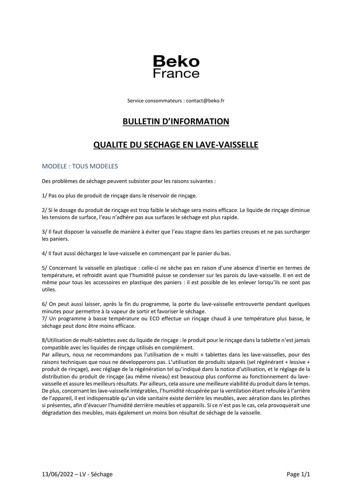

Séchage en lave vaisselle 2

13/06/2022 – LV - SéchagePage 1/1Service consommateurs : contact@beko.frBULLETIN D’INFORMATIONQUALITE DU SECHAGE EN LAVE-VAISSELLEMODELE : TOUS MODELESDes problèmes de séchage peuvent subsister pour les raisons suivantes :1/ Pas ou plus de produit de rinçage dans le réservoir de rinçage.2/ Si le dosage du produit de rinçage est trop faible le séchage sera moins efficace. Le liquide de rinçage diminueles tensions de surface, l’eau n’adhère pas aux surfaces le séchage est plus rapide.3/ Il faut disposer la vaisselle de manière à éviter que l’eau stagne dans les parties creuses et ne pas surchargerles paniers.4/ Il faut aussi déchargez le lave-vaisselle en commençant par le panier du bas.5/ Concernant la vaisselle en plastique : celle-ci ne sèche pas en raison d’une absence d’inertie en termes detempérature, et refroidit avant que l’humidité puisse se condenser sur les parois du lave-vaisselle. Il en est demême pour tous les accessoires en plastique des paniers : il est possible de les enlever lorsqu’ils ne sont pasutiles.6/ On peut aussi laisser, après la fin du programme, la porte du lave-vaisselle entrouverte pendant quelquesminutes pour permettre à la vapeur de sortir et favoriser le séchage.7/ Un programme à basse température ou ECO effectue un rinçage chaud à une température plus basse, leséchage peut donc être moins efficace.8/Utilisation de multi-tablettes avec du liquide de rinçage : le produit pour le rinçage dans la tablette n’est jamaiscompatible avec les liquides de rinçage utilisés en complément.Par ailleurs, nous ne recommandons pas l’utilisation de « multi » tablettes dans les lave-vaisselles, pour desraisons techniques que nous ne développerons pas. L’utilisation de produits séparés (sel régénérant + lessive +produit de rinçage), avec réglage de la régénération tel qu’indiqué dans la notice d’utilisation, et le réglage de ladistribution du produit de rinçage (au même niveau) est beaucoup plus conforme au fonctionnement du lave-vaisselle et assure les meilleurs résultats. Par ailleurs, cela assure une meilleure viabilité du produit dans le temps.De plus, concernant les lave-vaisselle intégrables, l’humidité récupérée par la ventilation étant refoulée à l’arrièrede l’appareil, il est indispensable qu’un vide sanitaire existe derrière les meubles, avec aération dans les plinthessi présentes, afin d’évacuer l’humidité derrière meubles et appareils. Si ce n’est pas le cas, cela provoquerait unedégradation des meubles, mais également un moins bon résultat de séchage de la vaisselle.
1 / 1